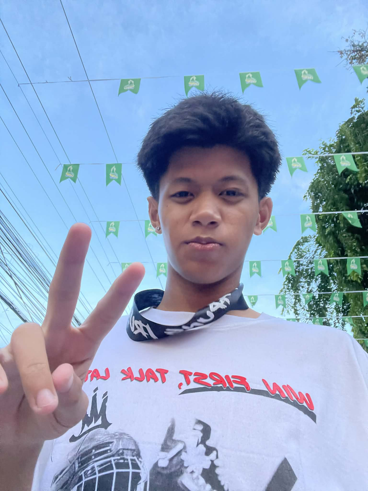

About Me

I was born in Baliuag,Bulacan on August 3, 2007. I grew up in a loving and caring family that always supported me and taught me important values like kindness, respect, and hard work. Our neighborhood was peaceful and full of children, so it was always a fun place to grow up. We often played outside until the sun went down, and those moments became some of my happiest childhood memories.
One memory that still stands out to me is spending long afternoons playing different sports and games with my friends. Whether we were playing basketball, tag, or simply riding our bikes around the neighborhood, every day felt like a new adventure. I was a very curious and cheerful child who loved exploring new things and asking lots of questions. I also enjoyed spending quality time with my family and other loved ones because they always made me feel happy and supported. Looking back, I am thankful for those experiences because they helped shape me into the person I am today. They taught me the value of friendship, family, and enjoying every moment of childhood.
School has been an important part of my life because it helped me learn new things and grow as a person. I enjoyed subjects that allowed me to solve problems and think creatively, especially those related to technology and computers. I also looked forward to Physical Education because I have always loved sports and staying active. While there were subjects that I found difficult, I tried my best to improve by studying and asking for help whenever I needed it.
One of the best parts of school was the friendships I made. My friends made school more enjoyable by sharing laughs, helping each other with schoolwork, and creating unforgettable memories. They were always there to support me during both good and difficult times.
One challenge I faced growing up was learning how to balance school responsibilities with my personal life. There were times when I felt stressed because of homework and projects, but I overcame those challenges by managing my time better, staying positive, and relying on the support of my family and friends. These experiences taught me to be responsible, determined, and confident in facing life's challenges.
The person I am today has been shaped by the people and experiences that have been part of my life. My family has had the greatest influence on me because they have always supported me, encouraged me, and taught me the importance of kindness, respect, and hard work. They showed me that treating others with compassion and never giving up are values that can help me overcome challenges.
My friends have also played an important role in my life. They have been there to celebrate my successes and support me during difficult times. Through them, I learned the importance of trust, teamwork, and being a good friend. Playing sports has also helped shape my character by teaching me discipline, perseverance, and how to work well with others toward a common goal.
The experiences I have faced, both good and bad, have helped me become stronger and more mature. Every challenge has taught me valuable lessons and encouraged me to keep improving. Because of these people and experiences, I continue to strive to become a responsible, hardworking, and caring person who always values family, friendship, and personal growth.
My biggest passions are playing basketball and online games. Basketball has always been one of my favorite hobbies because it keeps me active and gives me the chance to challenge myself. I enjoy practicing my skills, playing with my friends, and learning new techniques to become a better player. Every game teaches me the importance of teamwork, discipline, and never giving up, even when things get difficult.
I also enjoy playing online games during my free time. They allow me to relax after a busy day and have fun with my friends. I like how online games challenge my thinking, improve my decision-making, and let me work together with others to achieve a common goal. They also give me a chance to meet new people who share the same interests.
These hobbies are important to me because they help me maintain a good balance between school and my personal life. They make me happy, reduce my stress, and give me opportunities to improve my skills while creating enjoyable memories with my friends. Both basketball and online games are activities that I truly enjoy and will continue to be a part of my life.
There are several achievements in my life that I am proud of because they show how much I have grown as a person. One of my biggest achievements was graduating from senior high school. It was an important milestone because it reflected all the hard work, dedication, and perseverance I put into my studies. Finishing senior high school also gave me the confidence to continue pursuing my education.
Another achievement that means a lot to me is overcoming my fear of not being good enough in academics. There was a time when I doubted my abilities and worried that I could not keep up with my classmates. Instead of giving up, I worked harder, stayed determined, and learned to believe in myself. This experience taught me that progress is more important than perfection.
I am also proud of becoming more creative in my own way and discovering that I enjoy coding. At first, programming seemed difficult, but as I learned more and practiced, I started to appreciate the process of solving problems and creating programs. These achievements remind me that growth comes from believing in myself and never giving up.
When I think about my future, I see myself becoming a successful software developer who creates useful and meaningful applications. Since I have started to enjoy coding, I want to continue improving my programming skills and learn more about different technologies. My goal is to build programs that can make people's lives easier while also growing as a professional in the field of technology.
Aside from my career, I hope to become financially stable so that I can support my family and give back to them for everything they have done for me. I also dream of traveling to different places, both in the Philippines and abroad, to experience new cultures, meet new people, and create unforgettable memories.
Before I am done, I want to achieve my personal and professional goals by continuing to work hard and never giving up on my dreams. I know that the journey will not always be easy, but I believe that with determination, patience, and a positive attitude, I can overcome challenges and build a future that I can be proud of.
As I continue my journey in life, I hope people will remember me as someone who is kind, hardworking, and always willing to learn. I know that I am not perfect, but I believe that every challenge is an opportunity to grow and become a better person. I want to continue chasing my dreams, improving my skills, and making my family proud through my actions and achievements.
No matter what obstacles I face, I will always do my best to stay determined and never give up. My experiences have taught me that success does not happen overnight, but through patience, effort, and believing in yourself. A motto that represents me is, "Learning never exhausts the mind. -Leonardo da Vinci" I hope to live a life filled with purpose, growth, and meaningful relationships.